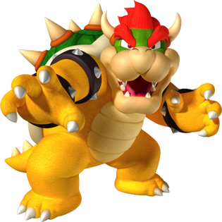

Enter your name, friend:
Hey friend, pick a weapon to use against the b(r)owser:

Statistics will appear after the first round of play.
The game of Rock Paper Scissors is based on predicting the opponent's move, and acting accordingly.
Each player must:
One wins when one picks
One loses when one picks